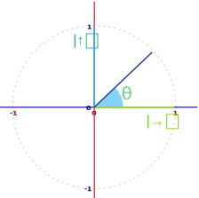
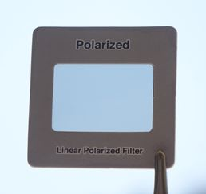
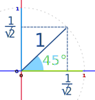
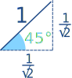
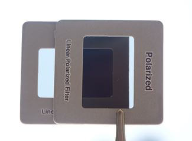
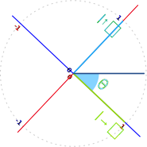
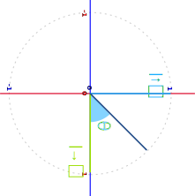
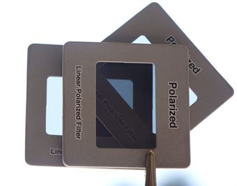

Quantum Polar Filter
Let's see how light behaves going through polarising filters!
You can try this yourself, use polarised lenses from sunglasses or a science supply shop (don't use circular polarisers that are common on cameras).
Polarization
Light is normally free to vibrate in any direction at right angles to its path.
But polarized light vibrates in one plane only:

Light gets polarized when passing through a polarizing filter.
Photon
Before the filter we can write the state of the photon like this (see Unit Circle):cos(θ)→ + sin(θ)↑
Where
- → means left-right direction, and
- ↑ means up-down direction:

First Encounter

What happens when the photon meets a polarising filter?
Let us say the filter is aligned in the left-right direction.
After passing through the filter the photon is either blocked or emerges as
→
with a probability of cos2(θ)
Probability
One of the basic rules in quantum mechanics is that the probability equals the amplitude magnitude squared, in other words:
Probability = |Amplitude|2
The || means magnitude of a vector, not absolute value.This example may help:
Example θ = 45°
At 45° we have
cos(45°)→ + sin(45°)↑
cos(45°) = 1√2, and sin(45°) = 1√2 (see Unit Circle), so we have:
1√2→ + 1√2↑

So, is the probability of passing 1√2 ?
Not quite, because total probability should equal 1
But with a little help from pythagoras we have:

(1√2)2 + (1√2)2 = 12
12 + 12 = 1
Each probability is 12. At 45° that makes sense, right?
We can use pythagoras each time, or simply remember:
The probability of each state is the amplitude magnitude squared:
(1√2)2 = 12
Let's try another angle just to be sure, how about 30°?
cos(30°)→ + sin(30°)↑
cos(30°) = √32 and sin(30°) = 12, so:
√32→ + 12↑
The probability of each state is the amplitude magnitude squared:
(√32)2 = 34 and (12)2 = 14
And 34 + 14 = 1
OK, enough examples, back to our filtering.
We are currently polarised in the left-right direction, like this:
→
100% probability left-right, 0% probability up-down.
Next Filter!
The next filter we use is up-down polarised.
But we currently have 0% probability of up-down.So too bad. All gone. And the result is blackness.

But What If We Add a 45° In Between?
Now we place a third filter in between the other two, and orient it at 45 degrees.
Our "intuition" says that adding more filtering should block the light even more, making for a blacker black, right?
Well, let's work through the mathematics!
After the first (left-right) filter we have (as before):
→
Now the photon faces the middle filter at 45°

We have already seen an example of what happens at 45°. Well, the photon doesn't care what orientation our nice graph is at, so this works just as well:

The result is:
1√2↗ + 1√2↘
and faces a 1/2 chance of being blocked, and if it gets through it is now at:
↘
Now the photon faces the final filter at 45°
Sorry? Isn't that 90°? To us maybe, but from the photon's current point of view it is another 45°. Like this:

The result is:
1√2↓ + 1√2→
And again there is a 12 chance of being blocked, or getting through at:
↓
The total for the last two filters is 12 × 12 = 14
Meaning that a photon that got through the first filter has a 1-in-4 chance of getting through the next two filters. So there is a modest chance that a photon can get through all 3 filters!
And it looks like this:

You can see that 0°⇒90° is black (lower center triangle), but 0°⇒45°⇒90° (upper center triangle) actually lets some light through. Adding that middle filter at 45° lets more light through.
Wow, mathematics rules!
What We Learned Here
In Quantum Physics our "common sense" view can be wrong, but we can use mathematics to get results that match what we actually observe.
We can use this special symbol to mean "in the x direction": x
Photons behave according to probability, and
Probability = |Amplitude|2